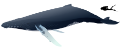
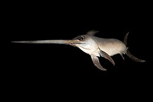
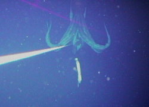
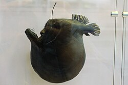
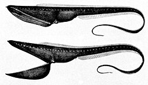
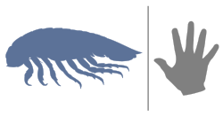

Sea life
Sunlight zone 0–200 m

Humpback whale
Megaptera novaeangliae
Humpbacks have their own language that is still being worked on to be decypherd.

Clownfish
Amphiprion ocellaris
Every clownfish starts life as a male. The biggest fish in a group turns into a female.
Twilight zone 200–1,000 m

Swordfish
Xiphias gladius
A swordfish warms its eyes and brain so it can see better in cold, dark water.

Giant squid
Architeuthis dux
The giant squid has the biggest eyes of any animal, about the size of a human head.
Midnight zone 1,000–4,000 m

Humpback anglerfish
Melanocetus johnsonii
The glowing lure on its head is lit up by bacteria that live inside it.

Gulper eel
Eurypharynx pelecanoides
Its mouth is much bigger than its body, so it can swallow prey larger than itself.

Giant isopod
Bathynomus giganteus
It lives on the sea floor. One giant isopod in a Japanese aquarium went more than five years without eating.